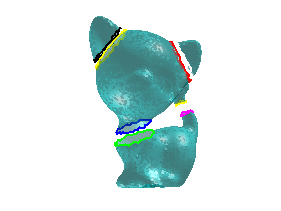

Contents
mesh processing toolbox
Author & support : nicolas.douillet (at) free.fr, 2020-2023.
% %% Example #1 : vertex normals addpath('data/'); addpath('src/'); % load('icosahedron.mat'); % % ngb_degre = 1; % select_vertex_normals(V,T,ngb_degre); % %% Example #2 : non manifold triangles % load('kitten_nmnfld.mat'); % nmnfld_tgl_idx_list = select_non_manifold_triangles(V,T); % view(180,0);
Example #3 : connected components
load('kitten_components.mat');
[cc_nb,components] = segment_connected_components(T);
show_mesh_components(V,components);
view(180,0);
4 components found in 2.971986e+00 seconds.

Example #4 : boundaries and holes selection
load('kitten_holed.mat'); nmnfld_vtx_idx = select_non_manifold_vertices(V,T,false); [V,T] = clone_solve_nmnfld_vertices(V,T,nmnfld_vtx_idx); % boundaries = select_mesh_boundaries_and_holes(V,T); % view(180,0);
1 components found in 1.005580e-02 seconds. 1 components found in 7.563000e-04 seconds. 1 components found in 1.048200e-03 seconds. 1 components found in 1.180810e-02 seconds. 2 components found in 4.968900e-03 seconds. duplicate_nmnfld_vertices request executed in 5.722480e-02 seconds. 5 clone vertices added.
Example #5 : hole filling
[V,T] = remove_non_manifold_vertices(V,T); boundaries = select_mesh_boundaries_and_holes(V,T); view(0,0); max_perim_sz = 200; T = fill_mesh_holes(V,T,boundaries,max_perim_sz); plot_mesh(V,T); view(0,0);
0 non manifold vertices removed in 7.134236e-01 seconds. 6 boundaries detected in 7.055220e-02 seconds. 6 hole(s) filled by adding 121 triangles in 4.738885e-01 seconds.

Example #6 : curvature
load('kitten.mat'); ngb_degre = 2; N = compute_vertex_normals(V,T,ngb_degre,'raw'); curvature = compute_mesh_curvature(V,T,N,ngb_degre,'mean'); show_mesh_curvature(V,T,curvature); view(180,0); % %% Example #7 : subselection % load('Gargoyle_3k.mat'); % plot_mesh(V,T); % view(-90,0); % % n = [0 1 1]; % I = [-23 -751 -13]; % [V_out,T_out] = select_submesh(V,T,n,I); % Gargoyle top part % % plot_mesh(V_out,T_out); % view(-90,0); % %% Example #8 : smoothing % plot_mesh(V,T), shading interp, camlight left; % view(-90,0); % % N = compute_vertex_normals(V,T,2); % nb_iterations = 1; % ngb_degre = 1; % V = smooth_mesh(V,T,nb_iterations,ngb_degre); % % plot_mesh(V,T), shading interp, camlight left; % view(-90,0); % %% Example #9 : convex hull % nb_vtx = 128; % X = 2*(rand(nb_vtx,1)-0.5); % Y = 2*(rand(nb_vtx,1)-0.5); % Z = 2*(rand(nb_vtx,1)-0.5); % % Rho = X.^2 + Y.^2 + Z.^2; % i = Rho <= 1; % X = X(i); % Y = Y(i); % Z = Z(i); % V = cat(2,X,Y,Z); % % plot_point_set(V,'o',[1 0.5 0],4); % axis equal; % view(3); % % [V,Qh] = quick_hull(V); % plot_mesh(V,Qh); % axis equal; % view(3);
mean curvature computed in 6.210114e-01 seconds.

Example #10 : boundary smoothing
load('kitten_components.mat'); show_mesh_boundaries_and_holes(V,T); shading interp; camlight left; alpha(0.5); view(180,0); axis off; boundaries = detect_mesh_boundaries_and_holes(T); nb_iterations = 2; ngb_degre = 6; V_out = smooth_mesh_boundaries_and_holes(V,boundaries,nb_iterations,ngb_degre); show_mesh_boundaries_and_holes(V_out,T); shading interp; camlight left; alpha(0.5); view(180,0); axis off;
8 boundaries detected in 8.258620e-02 seconds. Mesh boundaries smoothed in 8.317900e-03 seconds.


Example #11 : dual of triangular mesh
load('kitten.mat');
[V_dual,T_dual] = dual_of_trimesh(V,T);
plot_mesh(V_dual,T_dual);
view(180,0);

Example #12 : mesh slicing
load('Armadillo_20k.mat'); thres = -11; n = [0 0 1]; P = [0 0 thres]; slc_step = 3; raw_edges_list = query_edges_list(T,'sorted'); srt_itx_vtx_lsts = slice_mesh(V,T,n,P,true,3,'vertical',slc_step); plot_mesh(V,T); draw_slice_contours({srt_itx_vtx_lsts}); camlight left; shading interp; patch([max(V(:,1)) min(V(:,1)) min(V(:,1)) max(V(:,1))], [max(V(:,2)) max(V(:,2)) min(V(:,2)) min(V(:,2))], thres*ones(1,4), [1 1 1 1], 'FaceColor', [1 1 0]), hold on; zoom(1.5); alpha(0.7); view(150,30);